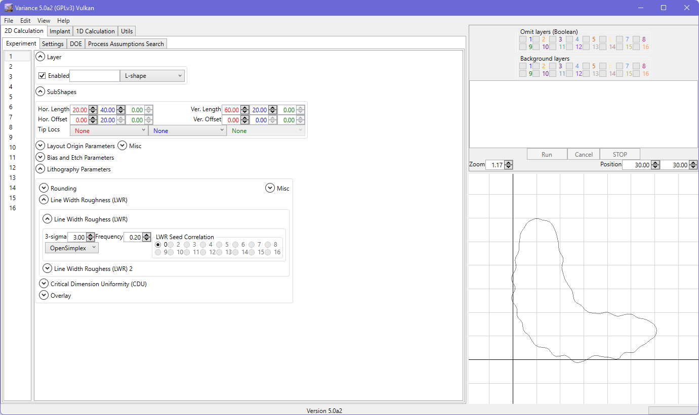
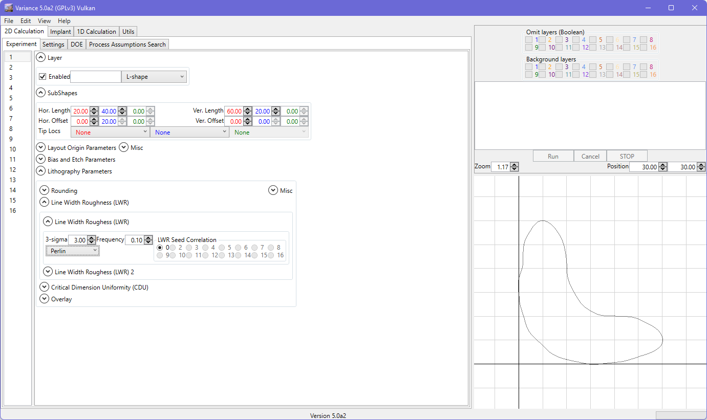
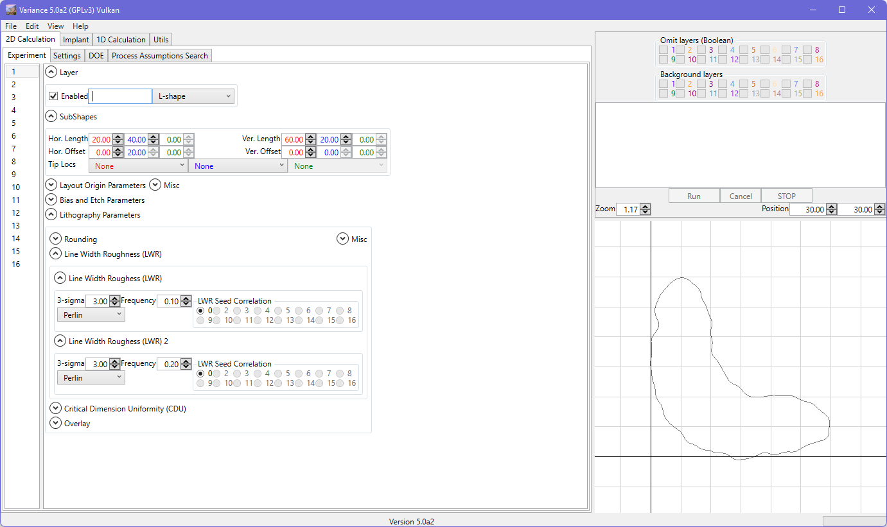
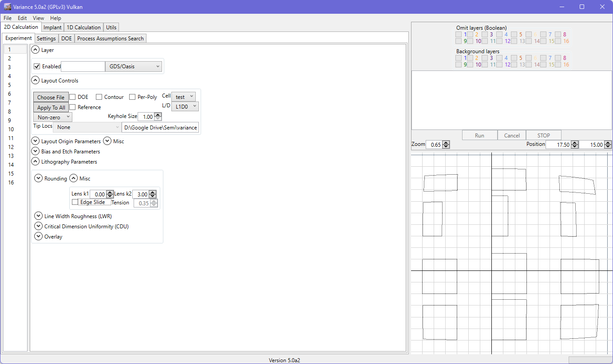

Lithography Parameters
The corner rounding definitions should be fairly obvious. LWR is per-shape and is currently mapped to LER based on the simulation setting option (LWR/2 or LWR/sqrt(2)). There are several noise methods available (Perlin, Simplex, OpenSimplex) with configurable freqency. To see the nominal LER, the 'Show' checkbox can be set.

Two layers of noise can be applied, allowing a low frequency noise to be modified by a high frequency noise.

Overlay is a global overlay unless you choose a reference layer in the basic case. You can also use the 'Av' (for average) checkbox to allow multiple layers to be referenced. In this situation, the average overlay value of the reference layers is used as the reference position for positioning the active layer.
Correlation options are available to link the variation value between layers. This means that the random number value(s) for overlay and/or CDU from the correlated layer(s) will be used to evaluate the overlay and CDU of this layer. For the same overlay and CDU 3-sigma inputs, the correlated shapes will be linked. Choosing ‘0’ means no correlation in each case.
As noted, LWR to LER conversion methodology is user-selectable. Choices are LER = LWR/2 or LER = LWR/sqrt(2).
Wobble describes the 3-sigma rotational variation of the shape. This is only applicable to non-GDS/Oasis shapes as PV bands should encompass this variation already.
Lens distortion can be applied using the k1 and k2 lens coefficients, using the model described by Zhang. The lens radius, r, is the distance from the world origin. k1 applies over r^2. k2 applies over r^4, defining a long range distortion effect compared to k1.

Please also refer to the order-of-operations section to understand how lens distortion, proximity biasing and LER are applied in combination.
GDS/Oasis Note
Side CDU can be enabled for GDS/Oasis shapes, but should only be used with care. Biasing is performed uniformally to increase or decrease the shape boundary. This may not reflect the OPC contours (process) and could also lead to algorithm fails in case of self-intersections. A preference is available to enable/disable this setting for this type of geometry; projects loaded with side CDU for these types of layers will override this preference if it is off.
An effort is made to handle self-intersections (as shown below). The polygon fill type menu (defaulting to 'non-zero') allows for adjustments, but 'non-zero' will usually be correct. Note that there is no guarantee that the result will work with all calculation modes, however.